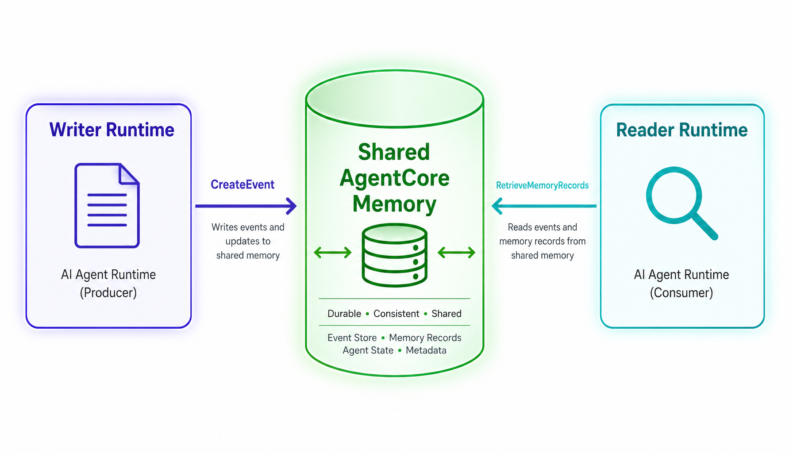
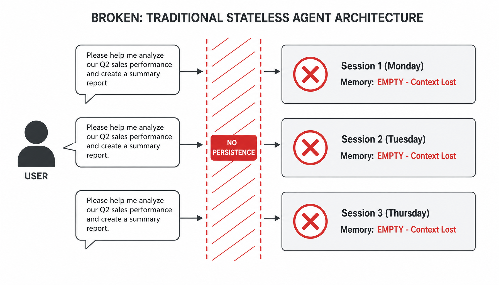
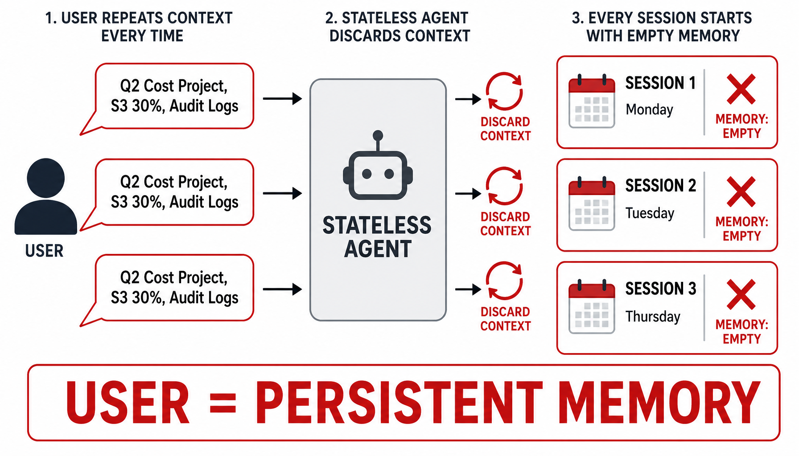
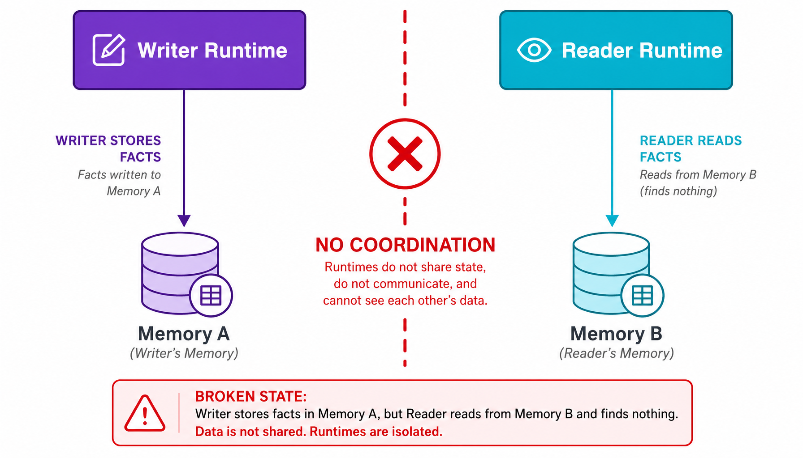
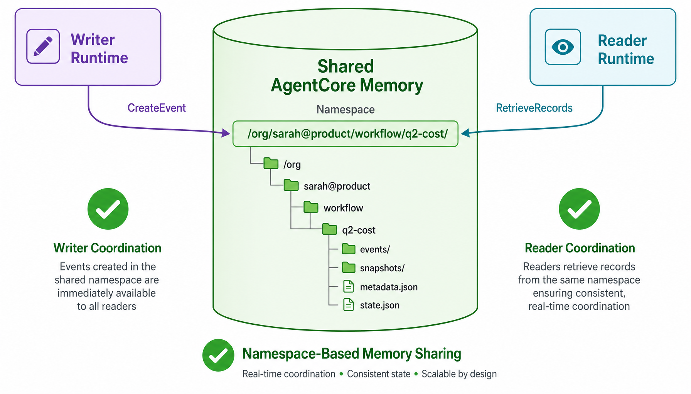
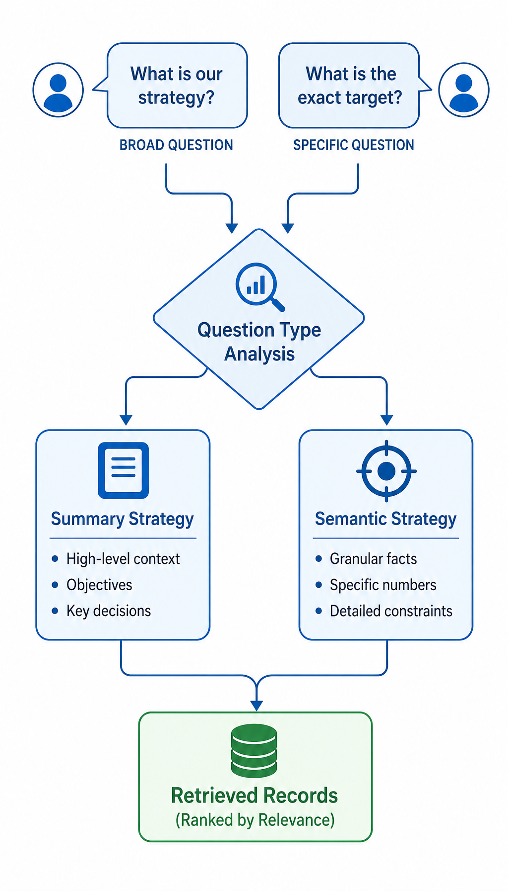
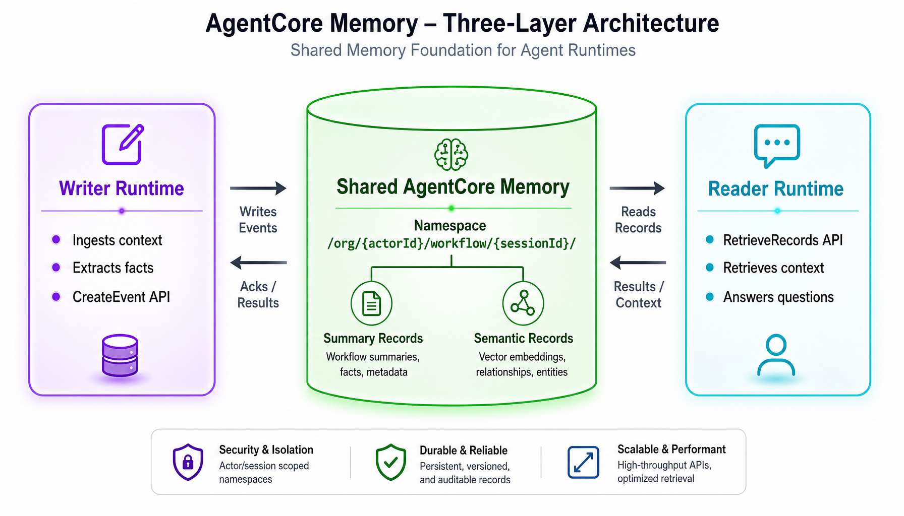
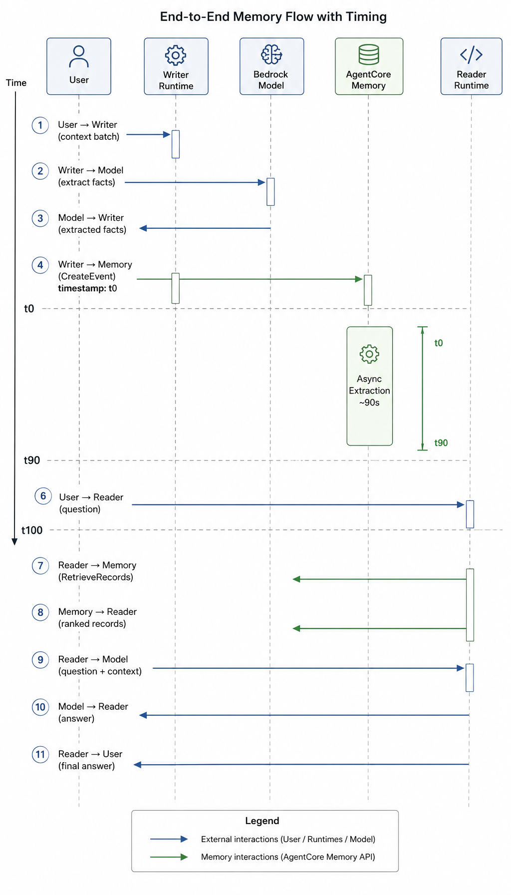
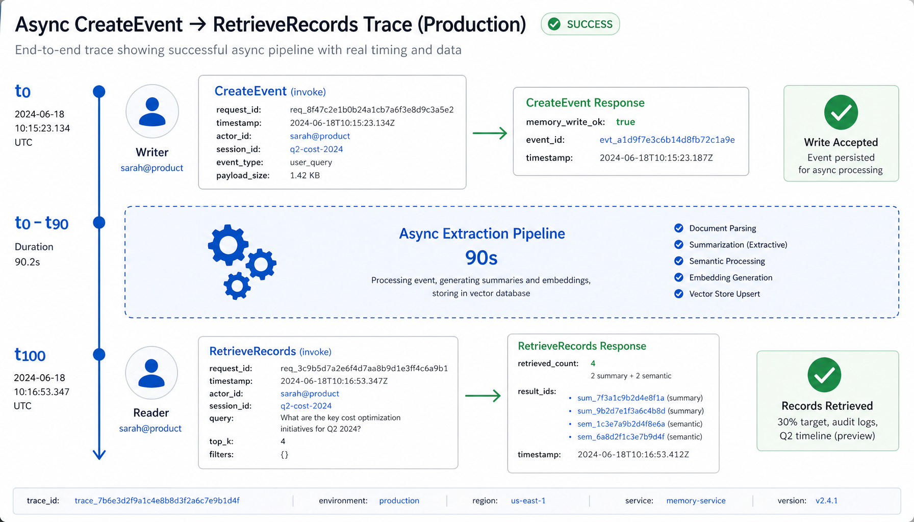
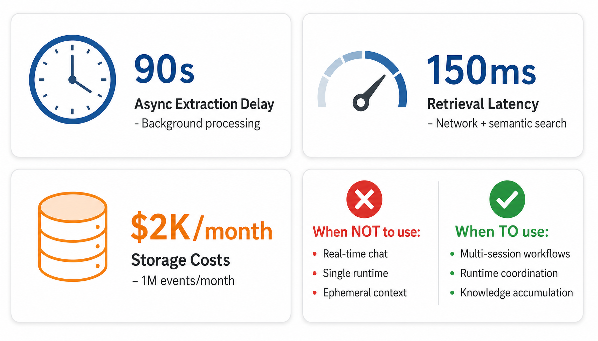

Sarah watched the user type the same background context for the fifth time that week. Her AI agent was brilliant—answered complex questions, synthesized information, produced insights. But every new session started from zero.
Session 1 (Monday 9 AM):"I'm Sarah from Product. We're running a cost optimization project for Q2. Priority: reduce S3 storage by 30%. Constraint: must preserve audit logs for compliance."
Agent produces detailed analysis. Sarah is impressed.
Session 2 (Tuesday 2 PM):"Hi, it's Sarah again. I'm working on the Q2 cost optimization project—S3 storage reduction, 30% target, compliance audit logs must stay. Can you show me the current storage breakdown?"
Same context. Same constraints. Retyped from memory.
Session 3 (Thursday morning):"Sarah here, Product team. Q2 cost optimization, S3 reduction 30%, audit logs protected. What's the impact of moving historical data to Glacier?"
By Thursday, Sarah stopped using the agent. Not because it didn't work. Because repeating context every session felt like talking to someone with amnesia.
Sarah's frustration is every enterprise AI team's week 2 problem. Not because agents can't reason. Because stateless invocations force users to re-explain the world every time. And nobody documented the engineering solution that makes memory work across sessions and runtimes.
Here's what her system looked like:

She was facing three problems simultaneously.
1. The context repetition nightmare. Every agent invocation is stateless. Background context, constraints, objectives—all live in the user's head. The agent starts fresh each time. Users repeat themselves. Token costs multiply. User experience breaks. The agent becomes a burden instead of an assistant. 2. The cross-runtime isolation disaster. Sarah's team built specialized runtimes. One runtime ingests context and extracts facts (writer). Another runtime answers questions (reader). The writer learns. The reader forgets. They don't share memory. Multi-agent coordination fails before it starts. 3. The retrieval strategy confusion. When the agent retrieves from memory, what should it fetch? Summary-level context for broad questions? Fact-level details for specific queries? Wrong strategy returns irrelevant records. Right strategy requires understanding memory architecture. Most systems pick one and pray. This is why most enterprise agents never scale beyond demos. Not because memory is hard. Because coordinating persistent memory across sessions, runtimes, and strategies requires engineering decisions that aren't documented. Then Sarah's team found the architecture that changed everything.A three-component design built on [AWS Bedrock AgentCore Memory](https://aws.amazon.com/bedrock/agentcore/), AWS's managed long-term memory service for production AI agents. It ships two runtime patterns and one shared knowledge base. Writer Runtime ingests context and persists facts. Reader Runtime retrieves context and answers questions. Shared Memory coordinates between them with namespace-based isolation and strategy-aware retrieval.
Sarah's team rebuilt the system in a weekend. Same two runtimes. But now the writer stored facts the reader could retrieve. Every user's context lived in an isolated namespace. Broad questions fetched summaries. Specific questions fetched facts. The agent remembered.
Six weeks of iteration. 36 end-to-end scenarios covered, including concurrent writes, async extraction delays, strategy validation, namespace isolation, and cross-session continuity. This article walks through how it works, and the pieces that cost us time to learn.Reference implementation: the POC at feat-agentic-memory branch demonstrates writer/reader coordination over shared AgentCore Memory. This article is our production experience turning that POC into a scalable multi-session architecture.
---
Sarah's first week was a preview of every enterprise AI team's week two problem. Not the agent. The user experience.
Every invocation started from zero. Background context, project constraints, objectives—all lived in Sarah's head. The agent had no memory between sessions. Standard operating procedure for stateless systems. Unacceptable for knowledge work.
Picture it: your team builds an AI agent that analyzes cost data, produces recommendations, answers follow-up questions. A user asks:
*"Show me S3 storage costs by bucket for Q2."*
The agent pulls data, produces a chart. User follows up the next day:
*"Compare that to Q1."*The agent doesn't remember Q2. It doesn't know which buckets. It starts fresh.
Traditional agent systems are stateless by design. Each invocation is independent. Context lives in the session, ephemeral and forgotten when the session ends. This works for single-shot questions. It breaks for workflows.
The traditional approach:
1. User submits query with full context.
2. Agent processes in ephemeral session memory.
3. Agent returns answer.
4. Session ends. Memory discarded.
5. Next query: start from zero.
The user becomes the persistent memory. They re-explain the project every session. They re-state constraints. They re-provide background. The agent is brilliant but amnesiac.

This is why Sarah stopped using the agent. Not because it didn't work. Because using it felt like onboarding a new team member every morning.
Token costs multiply. A 200-token context block repeated five times is 1,000 wasted tokens. Across 50 users, 100 sessions each, that's 5 million tokens burned on repetition. User frustration grows faster than token bills.
AgentCore Memory's answer is deceptively simple: make memory a first-class infrastructure primitive.The agent doesn't manage memory. A separate service does. The agent writes facts via CreateEvent. Another agent reads facts via RetrieveMemoryRecords. Memory persists across sessions, runtimes, and days.
Here's the writer runtime code that persists context:
def save_event_to_memory(actor_id: str, session_id: str, text: str):
agentcore = boto3.client("bedrock-agentcore")
agentcore.create_event(
memoryId=SHARED_MEMORY_ID,
actorId=actor_id,
sessionId=session_id,
eventTimestamp=datetime.now(timezone.utc),
payload=[{
"conversational": {
"role": "USER",
"content": {"text": text}
}
}]
)RetrieveMemoryRecords. Sarah's Q2 context lives in memory. The next session sees it. The agent remembers.
---

`
/org/{actorId}/workflow/{sessionId}/
`
Same actorId + sessionId → shared context across runtimes.
Different actor or session → isolated memory scope.
Here's the writer persisting context with namespace binding:
Writer runtime
agentcore.create_event(
memoryId=SHARED_MEMORY_ID,
actorId="sarah@product",
sessionId="q2-cost-optimization-2024",
payload=[{"conversational": {"role": "USER", "content": {"text": facts}}}]
)Reader runtime
namespace = f"/org/{actor_id}/workflow/{session_id}/"
agentcore.retrieve_memory_records(
memoryId=SHARED_MEMORY_ID,
namespace=namespace,
searchCriteria={"searchQuery": question, "topK": 6}
)/org/sarah@product/workflow/q2-cost-optimization-2024/. The reader retrieves from the same path. The runtimes coordinate through a unified knowledge base, not through coupled state.


30%
- *"Which logs must be preserved?"* → Retrieved semantic record: audit logs, compliance requirement
- *"What's the timeline?"* → Retrieved semantic fact: Q2 2024
From evidence/e2e/e2e-flow-4-strategy-validation-complex.json:
- broadQuestionsWithSummary = 2 / 2
- specificQuestionsWithSemantic = 3 / 3
- passed = true
The topK parameter matters too. Retrieval is ranked by relevance. topK=3 fetches the top 3 records. topK=10 fetches 10. Too low, you miss context. Too high, you dilute relevance. Sarah's team tested and found topK=6 balanced breadth and precision for their queries.
Here's the retrieval code with strategy-aware topK:
def retrieve_memory(question: str, actor_id: str, session_id: str, top_k: int):
namespace = f"/org/{actor_id}/workflow/{session_id}/"
resp = agentcore.retrieve_memory_records(
memoryId=SHARED_MEMORY_ID,
namespace=namespace,
searchCriteria={"searchQuery": question, "topK": top_k}
)
return resp.get("memoryRecordSummaries", [])
CreateEvent. Returns evidence fields: memory_write_ok, actor_id, session_id, writer_summary. Focuses purely on ingestion, not retrieval.
Component 2. Shared AgentCore Memory (persistent knowledge base). The only component that stores long-term memory. Accepts events from writers via CreateEvent. Asynchronously derives two types of records: summary (high-level) and semantic (fact-level). Indexes records under namespace /org/{actorId}/workflow/{sessionId}/. Returns records to readers via RetrieveMemoryRecords ranked by relevance. This is the coordination layer, encrypted at rest with AWS KMS.
Component 3. Reader Runtime (question answering). Receives user questions. Retrieves relevant records from AgentCore Memory via RetrieveMemoryRecords. Optionally enriches with runtime tools (e.g., current time). Calls Bedrock model using retrieved records as context. Returns evidence fields: memory_records_count, reader_answer, memory_preview. Focuses purely on retrieval, not persistence.
Together, these three components produce a system that is stateful, coordinated, strategy-aware, and scalable by design.
Writer runtime
agentcore.create_event(
memoryId=SHARED_MEMORY_ID,
actorId="sarah@product",
sessionId="q2-cost-2024",
payload=[{"conversational": {"role": "USER", "content": {"text": extracted_facts}}}]
)Reader runtime
agentcore.retrieve_memory_records(
memoryId=SHARED_MEMORY_ID,
namespace=f"/org/{actor_id}/workflow/{session_id}/",
searchCriteria={"searchQuery": question, "topK": 6}
)retrieved_count returns 0. After extraction, the reader sees the derived records ranked by relevance.
Step 4. Model generates answer from context
context = "\n".join([record["content"]["text"] for record in memory_records])
model_prompt = f"Answer ONLY using the provided memory.\n\nQuestion:\n{question}\n\nMemory:\n{context}"
answer = bedrock_runtime.converse(modelId=MODEL_ID, messages=[{"role": "user", "content": [{"text": model_prompt}]}])// CDK stack (simplified)
const sharedMemory = new aws_bedrockagentcore.CfnMemory(this, 'SharedMemory', {
memoryName: 'poc-shared-memory'
});
const writerRuntime = new aws_bedrockagentcore.CfnRuntime(this, 'WriterRuntime', {
runtimeName: 'poc_memory_writer_runtime',
modelId: 'eu.anthropic.claude-haiku-4-5-20251001-v1:0',
runtimeLanguage: 'PYTHON_3_12',
s3Location: { uri: writerCodeUri }
});
const readerRuntime = new aws_bedrockagentcore.CfnRuntime(this, 'ReaderRuntime', {
runtimeName: 'poc_memory_reader_runtime',
modelId: 'eu.anthropic.claude-haiku-4-5-20251001-v1:0',
runtimeLanguage: 'PYTHON_3_12',
s3Location: { uri: readerCodeUri }
});
"I'm Sarah from Product. We're running a cost optimization project for Q2 2024. Priority: reduce S3 storage costs by 30%. Constraint: must preserve audit logs for compliance. Timeline: complete analysis by end of Q2. Budget approved: $50K for migration tooling."Writer response (from
evidence/e2e/e2e-flow-5-live-aws-proof.json):
{
"memory_write_ok": true,
"memory_write_status": "ok",
"memory_id": "mem-abc123xyz",
"actor_id": "sarah@product",
"session_id": "q2-cost-optimization-2024",
"writer_summary": "• Q2 2024 cost optimization project\n• Target: 30% S3 storage reduction\n• Compliance constraint: preserve audit logs\n• Timeline: Q2 completion\n• Budget: $50K migration tooling"
}"What's our exact S3 reduction target for Q2?"Reader response (from
evidence/e2e/e2e-flow-6-live-aws-proof-english-output.json):
{
"memory_records_count": 4,
"memory_meta": {
"namespace": "/org/sarah@product/workflow/q2-cost-optimization-2024/",
"retrieved_count": 4
},
"reader_answer": "The exact S3 reduction target for Q2 is 30%. This must be achieved while preserving audit logs for compliance, with a timeline of Q2 2024 completion and a budget of $50K allocated for migration tooling.",
"memory_preview": [
"Q2 2024 cost optimization project with 30% S3 storage reduction target",
"Compliance constraint: audit logs must be preserved",
"Timeline: complete analysis by end of Q2"
]
}
CreateEvent with Sarah's context. AgentCore extracted facts asynchronously. Reader called RetrieveMemoryRecords 100 seconds later. Memory returned 4 records: 2 summary (project scope, objectives) + 2 semantic (30% target, compliance constraint). Reader passed records to the model. Model generated answer strictly from memory, not from reasoning or hallucination.
The answer includes the exact percentage (30%), the compliance constraint (audit logs), the timeline (Q2 2024), and the budget ($50K). All facts came from memory records, not model knowledge.
Our test suite covers 36 scenarios like this one. Concurrent writes from multiple users. Async extraction delays with retry logic. Strategy validation (broad vs specific questions). Namespace isolation across sessions. Cross-session continuity. All 36 pass before every deploy.
---

CreateEvent triggers background processing. AgentCore extracts summary and semantic records asynchronously. Typical delay: 90 seconds. This is not a bug. This is the tradeoff for intelligent indexing. If your workflow requires instant retrieval after write, this architecture won't work. Batch ingestion workflows (nightly context loads, periodic updates) fit better than real-time chat.
Retrieval latency (~150ms per query). Every RetrieveMemoryRecords call crosses the network to AgentCore, runs semantic search over indexed records, ranks by relevance, and returns. In our setup (eu-central-1, single-region), p95 sits around 150ms for a topK=6 query. Cached paths are faster (~80ms). Cold paths slower (~250ms). This adds to your agent's total response time. Factor it in before committing to sub-second voice agents.
Storage costs scale with event volume. AgentCore Memory stores source events plus derived records. Rough estimate: 3-5x storage multiplier (1 source event → 3-5 derived records). At $0.30 per GB-month for memory storage (AWS pricing as of 2024), 1,000 events averaging 2KB each = ~6-10 MB derived = ~$0.002/month. Scales linearly. For 1M events/month, budget ~$2K/month in storage. Not prohibitive, but not negligible.
Operational surface area. Two runtimes instead of one. Each needs deploy pipeline, IAM role, CloudWatch log group. Shared memory needs KMS key, namespace design, and access policies. For a single-runtime toy agent, this is overkill. For five specialized runtimes serving 500 users, it pays for itself inside a quarter.
When NOT to use this:
- Single-runtime agents that don't need cross-session memory
- Real-time chat requiring instant memory writes and reads
- Ephemeral context that doesn't persist beyond one session
- Cost-sensitive MVPs where storage costs matter more than UX
When to use this:
- Multi-session workflows where users return and expect continuity
- Specialized runtime coordination (writer/reader, ingestion/analysis, multi-agent teams)
- Knowledge accumulation over weeks/months (user preferences, project context, historical data)
- Compliance requirements for auditable memory with namespace isolation
These are the price of the guarantees. None is a dealbreaker. All of them matter on day 30.
---
sessionId alone. User A's context leaked into User B's queries. Multi-tenancy broken at the foundation. Fix: namespace pattern /org/{actorId}/workflow/{sessionId}/ binds memory to both user and session. Cross-user leakage architecturally impossible.
3. We didn't tune topK. Default topK=5 sometimes missed critical facts. topK=20 diluted relevance with noise. Fix: tested values from 3 to 10, found topK=6 balanced breadth and precision for our query patterns. Your optimal value will vary—test it.
4. We didn't validate strategy behavior. Assumed all questions retrieved the same record types. Discovered broad questions were drowning in semantic noise. Fix: built strategy validation harness that tests broad questions (expect summary records) vs specific questions (expect semantic records). Validation runs in CI before every deploy.
5. We forgot retry logic for async extraction. Occasionally extraction took 120+ seconds instead of 90. Reader queries failed with "no records found" when they should have succeeded. Fix: reader retries retrieval with exponential backoff (3 attempts, 30s delay) before reporting "insufficient_memory". Async systems need retry, not hope.
---
"Can we extend this to customer support context?"
"Can we add product preference memory?"And the answer, every time, is yes, because the architecture was built to scale. Here's what's left after six weeks of iteration: - No context repetition. Users provide background once, the system remembers. - Cross-runtime coordination. Writer and reader share memory through namespace-based isolation. - Strategy-aware retrieval. Broad questions get summaries, specific questions get facts. - New runtimes in hours, not weeks. Add a specialized runtime, point it at shared memory, done. None of this is magic. AWS Bedrock AgentCore Memory is generally available. Python 3.12 runtimes are stable. Async extraction is a documented tradeoff. The hard part was never the pieces. It was refusing to build stateless systems when users need memory.
So here's the question: which workflow have you been avoiding? The one where users complain about repeating themselves. The one that makes your demo brilliant and your production experience frustrating.Build this for that one. The next five workflows become hours of work, not months. And the discipline travels. Whatever comes after AgentCore (and something always does), the pattern of *shared memory, namespace isolation, strategy-aware retrieval, async extraction* outlives any specific AWS service. If you try it, come back and tell us what broke on day 30. That's where the real architecture lives. --- Reference: POC implementation at
feat-agentic-memory branch · [AWS Bedrock AgentCore Memory documentation](https://aws.amazon.com/bedrock/agentcore/)
AWS services used: AWS Bedrock AgentCore Memory · AWS Bedrock Runtime (Claude Haiku 4.5) · AWS CDK · AWS KMS · Amazon CloudWatch
Production-ready design: Multi-session continuity · Namespace-based isolation · Strategy-aware retrieval · Full audit trail